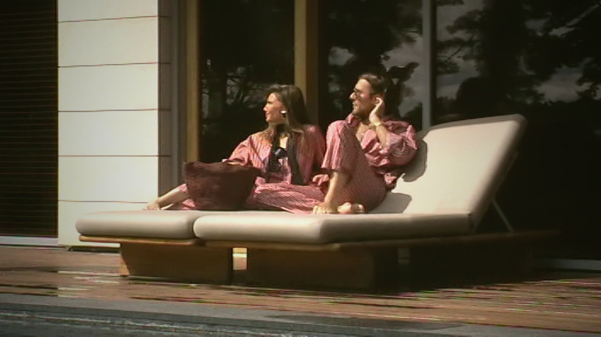
Reels
Strategy
Scroll
Растим аудиторию через ролики, а лента остаётся тихой
150 роликов за 26 недель, около 6 в неделю. Один и тот же чистый файл выходит в Instagram и TikTok в один день. Годовой план ставит потолок 1–2 поста в неделю, поэтому делим работу на два контура.
- Витрина
- 1–2ролика в неделю в основной ленте Instagram — самые сильные
- Охват
- 4–5роликов в неделю через Trial Reels: только новой аудитории, без сетки профиля
- TikTok
- 150все ролики, отдельный аккаунт без ограничения по частоте
- Не меняется
- Без скидок, FOMO, танцев и трендовых звуков. Растём за счёт частоты и хуков, а не стиля
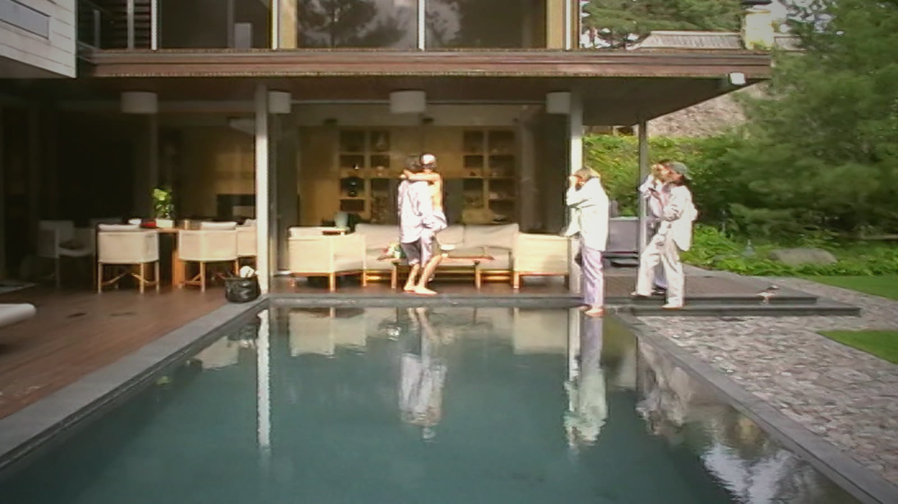
Удержание и пересылки, а не подписчики
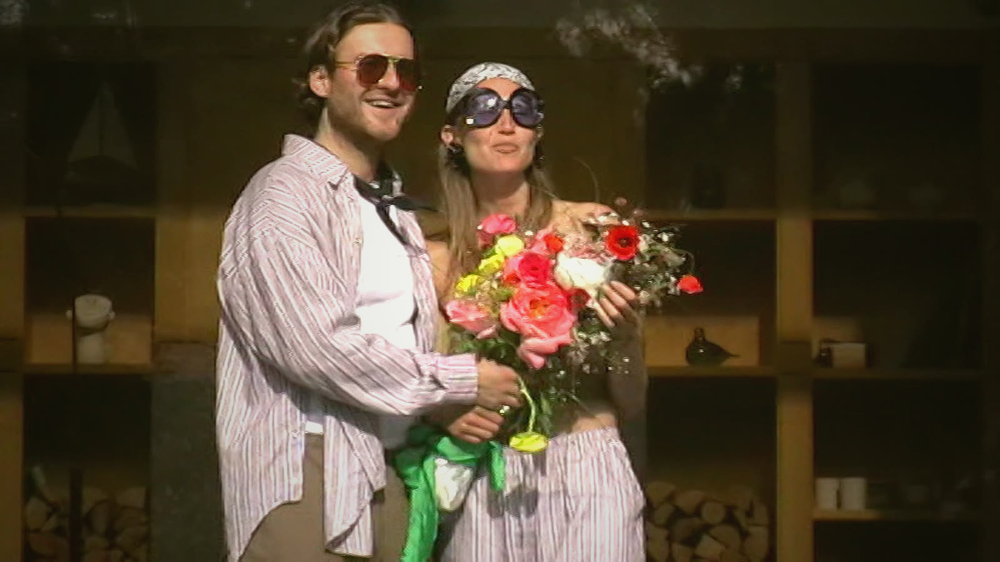
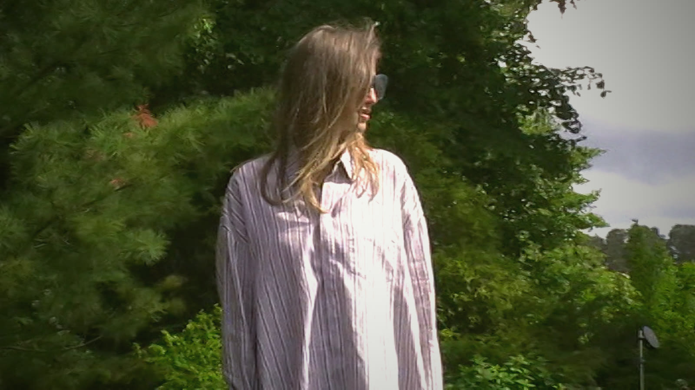
Глава Instagram Адам Моссери назвал три главных сигнала: время просмотра, лайки и пересылки на охват. Свежих официальных изменений в 2026 нет; цифры «весов» из блогов не подтверждены, мы их не используем.
- Время просмотра и досмотр
Хук за 3 секунды
Главный сигнал на обеих платформах. Ролики 12–20 с, финал похож на первый кадр — ролик зацикливается.
- Пересылки в Direct
Send this to the one you'd share a shirt with
Для неподписчиков Instagram это главный сигнал, в TikTok пересылка сильнее лайка. Призыв прямо продолжает идею people first.
- Сохранения
Рубрики «как носить» и «ткань»
Учитываются на обеих платформах; полезное сохраняют.
- Поиск
Ключевая фраза в первой строке
TikTok читает подпись, текст в кадре и речь. Пишем словами покупателя: «striped pyjama shirt, Italian deadstock cotton».
- Оригинальность
Только чистый мастер-файл
Ролики с водяным знаком TikTok Instagram показывает хуже. Загружаем в обе сети файл из нашей папки.
Число подписчиков в TikTok на показы напрямую не влияет — новый аккаунт может получить охват с первого ролика. Официальной нормы частоты нет ни у одной платформы; для Instagram ориентир 3–5 роликов в неделю.
Сначала качество роликов, потом цифры роста
Цель за 26 недель — подписчики и обращения клиентов и бутиков из роликов. Цели по подписчикам ставим после 4 недель, когда будет база. Ниже — наши рабочие пороги для ролика 12–20 с; через 4 недели заменяем их своей медианой.
- Досмотр до 3-й секунды
- 60%+внимание
- Средний процент просмотра
- 50%+внимание
- Пересылки на 1000 охвата
- 10+распространение
- Сохранения на 1000 охвата
- 5+распространение
- Подписки на 1000 охвата
- 2+рост
- Профиль, ссылка, Direct
- Считаем по неделям, цель после базы
- Заказы и бутики
- В каждом заказе спрашиваем «как вы нас нашли»
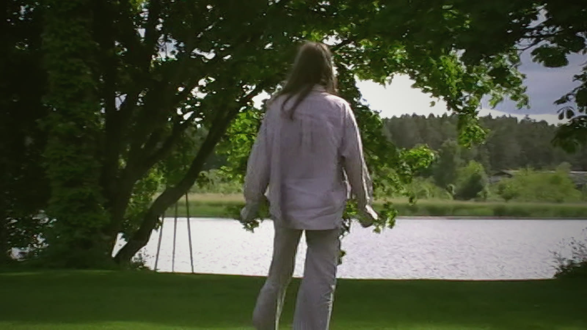
Пять рубрик на 150 роликов
Рубрики продолжают столпы годового плана. Каждые 4 недели доли сдвигаем к тому, что даёт пересылки и подписки.
- 40 · Настроение
- Дом у озера, бассейн, качели, сад; голос бренда и стихи.Хук: “some summers are worn slowly” · на пересылки и пересмотры
- 30 · Ткань
- Крупно ткань, вышивка «people first», номер и карточка подлинности, ателье.Хук: «Зачем рубашке номер?» · на сохранения и доверие к цене €180–450
- 30 · Закулисье
- Живой звук со съёмок, реплики режиссёра, смех, примерки — как Vi2.Хук: «что, если красиво выглядит, значит скотина?» · на комментарии и подписки
- 25 · Как носить
- Одна рубашка — три образа; рубашка отдельно от брюк; разные фигуры и возрасты.Хук: «3 способа носить полосатую рубашку» · на сохранения и поиск
- 25 · Продукт
- Костюмы, зипы, пуховики, подарочная Signature, бутики, пресса.Хук: «Подарок с номером из тиража» · на визиты профиля и Direct
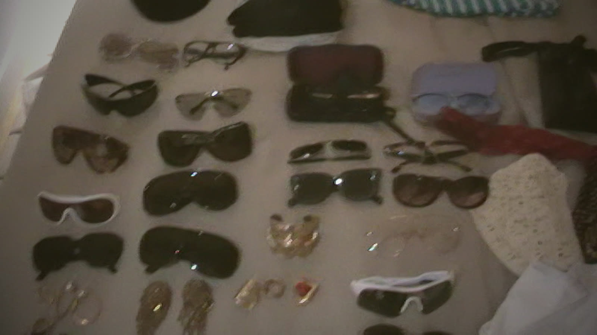
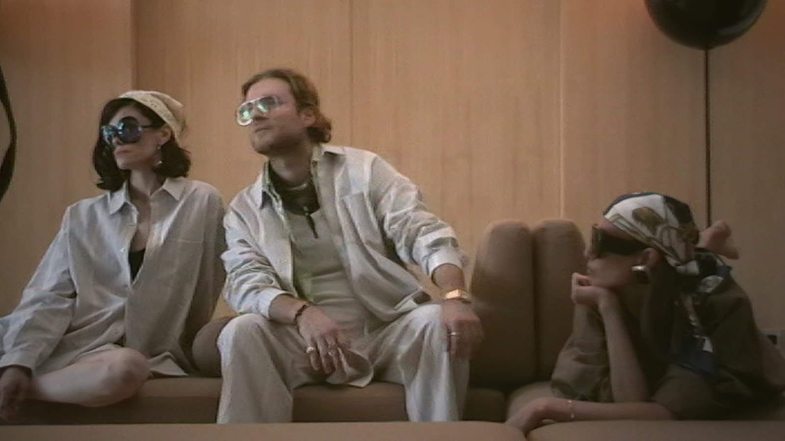
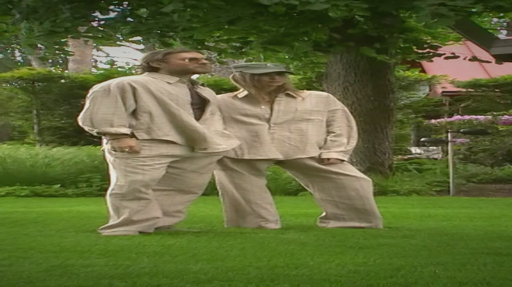
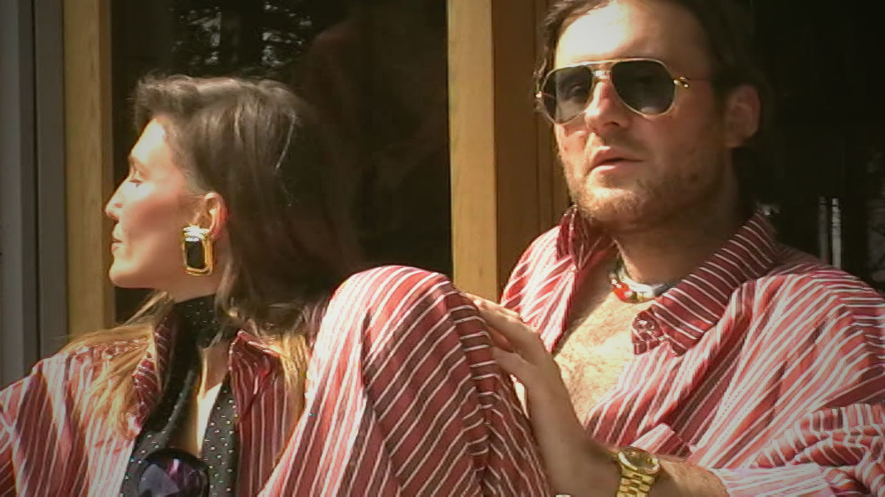
Основатели — Соня и Иван — по 1 ролику в месяц внутри рубрик «Ткань» и «Закулисье». Для этого нужна отдельная запись голоса или кадра.
Наша эстетика плюс хук
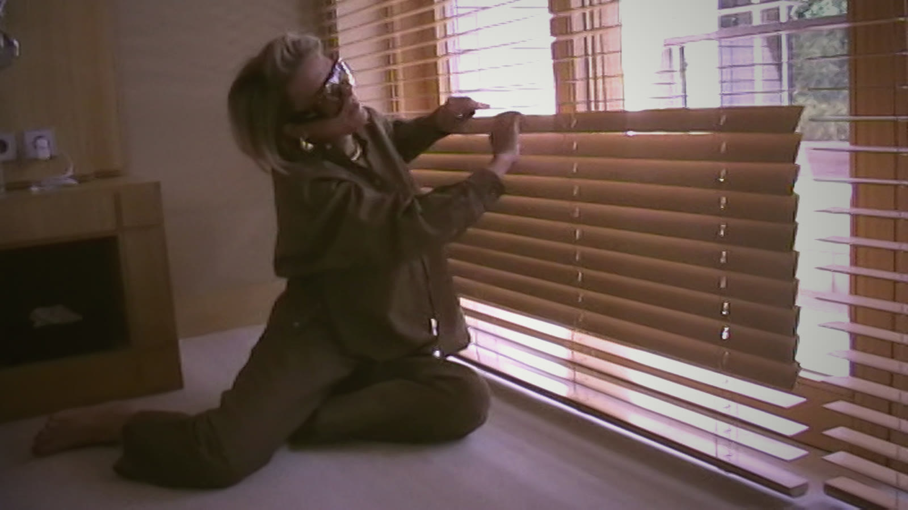
Плёночный цвет, зерно, голос бренда и жёлтые титры остаются. Новое — титр-хук белой антиквой вверху кадра в первые 2 секунды. Финал — только логотип People First поверх кадра, без надписи.
Лицо или движение, титр-хук до 6 слов, первая фраза голоса или живая реплика — одновременно.
2–3 быстрые склейки или фраза, которая ставит вопрос.
2–3 строки голоса с титрами внизу, планы по 1,2 с.
Длинный план с засветкой: красивое лицо или ткань.
Логотип поверх последнего кадра, без текста. Кадр похож на первый — ролик зацикливается.
- Длина
- 12–20 с для рубрик настроения, ткани, стиля, продукта; 20–40 с для закулисья
- Язык
- Английский в голосе и титрах; русская речь со съёмок — с английскими титрами
- Тесты
- Для сильных роликов — вторая версия начала, сравниваем через Trial Reels
Четыре строки, один призыв
Ключевая фраза для поиска, одна фраза истории, один призыв и 3–5 хештегов. Текст на английском, одинаковый для обеих сетей; ссылки — только в профиле.
Red striped pyjama set, Italian deadstock cotton. His shirt, her sunglasses, a whole afternoon. Send this to the one you'd share a shirt with. #peoplefirst #resortwear #pyjamaset #summerhouse
Пример для ролика 17 «Красные полоски»
| Призыв | Текст | Когда |
|---|---|---|
| Переслать | Send this to the one you'd share a shirt with. | Настроение, закулисье |
| Сохранить | Save it for your next packing list. | Как носить, ткань |
| Написать | DM us “shirt” for sizes and the story of yours. | Продукт, Signature |
| Подписаться | Follow for the rest of the summer. | Серии из нескольких частей |
| Хештеги | Рубрика |
|---|---|
| #peoplefirst #deadstockfabric #italianfabric #slowfashion | Ткань и ремесло |
| #peoplefirst #resortwear #pyjamaset #summerhouse | Настроение |
| #peoplefirst #shirtstyling #stripedshirt #howtowear | Как носить |
| #peoplefirst #behindthescenes #fashionshoot | Закулисье |
| #peoplefirst #signatureshirt #numberededition #giftforhim | Продукт |
Проверить: свободен ли тег #peoplefirst от чужого контента; если нет — берём #pplfrst. Состав ткани в подписи — только подтверждённый.
роликов в неделю: каждый в TikTok и Instagram в один день,
2 — в ленту, 4 — как Trial Reels
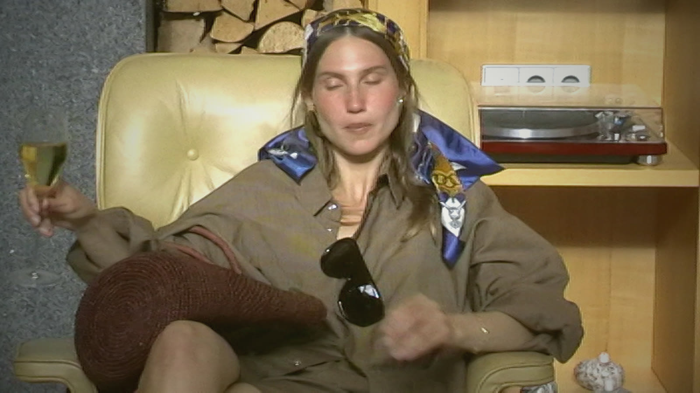
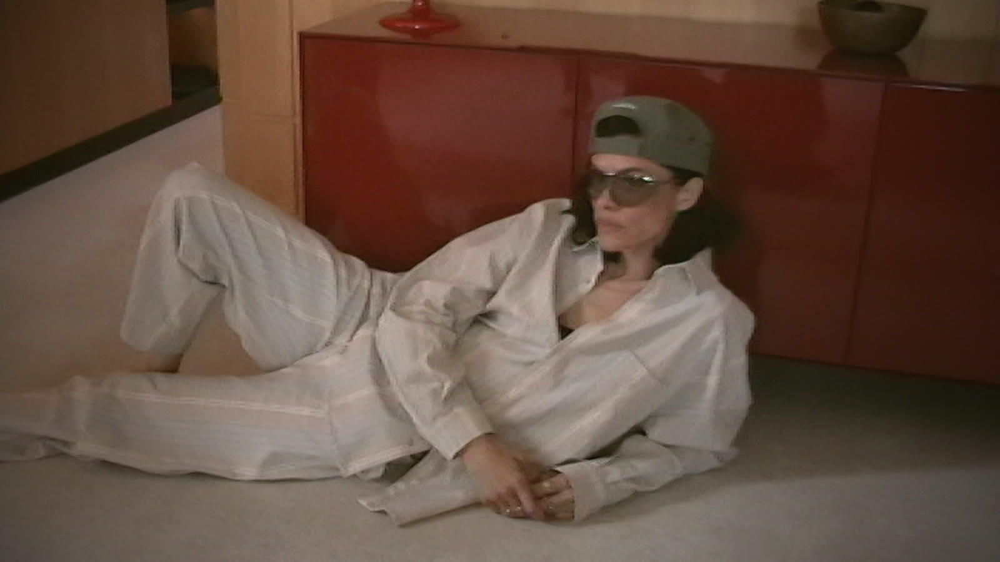
| День | Время, Рига / Киев | Рубрика | TikTok | |
|---|---|---|---|---|
| Пн | 19:30 | Настроение | Trial | Да |
| Вт | 12:30 | Ткань и ремесло | Лента | Да |
| Ср | 19:30 | Закулисье | Trial | Да |
| Чт | 12:30 | Как носить | Trial | Да |
| Пт | 19:30 | Лучший ролик недели или продукт | Лента | Да |
| Сб | 11:00 | Настроение или продукт | Trial | Да |
| Вс | — | Сторис и разбор недели | — | — |
- Время — стартовая гипотеза (UTC+2). Через 4 недели берём часы активности из статистики аккаунта
- Первый час после выхода: отвечаем на все комментарии и ставим ролик в сторис
- Лучший Trial Reel недели выпускаем в ленту в пятницу
- Около 1 часа в день на публикацию и ответы; планирование — Meta Business Suite и TikTok Studio
Четыре фазы, три разбора
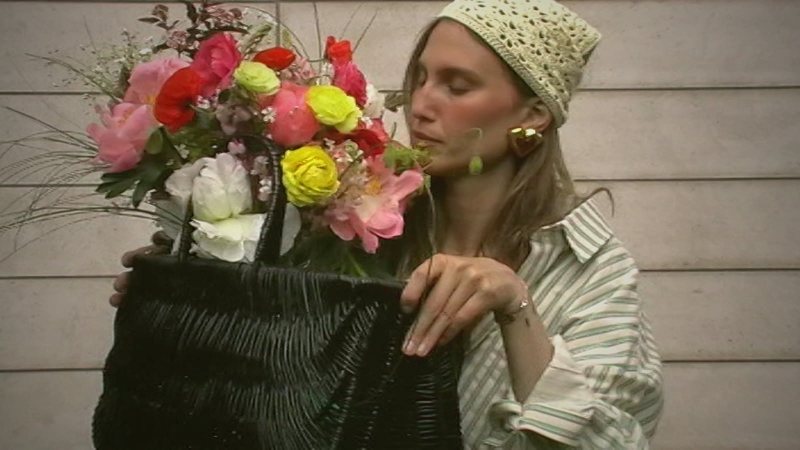
Тест
9 ноя — 6 дек. Прогрев о шерсти 9–19 ноября, 20 ноября — фильм и первая клетка. Дальше проверяем хуки и рубрики.
Подарки
7 дек — 3 янв. Signature с номером как подарок. Пуховики, новогодняя кампания.
Рост
4 янв — 28 мар. Больше того, что сработало. Без дропов: ремесло, закулисье, основатели.
Предсезон
29 мар — 10 мая. Курортная капсула к сезону. Бутики: «теперь также в…».
Запуски товаров — из контент-плана сентябрь–декабрь и годового плана 2026–2027.
Сначала шерсть, потом фильм и первая клетка
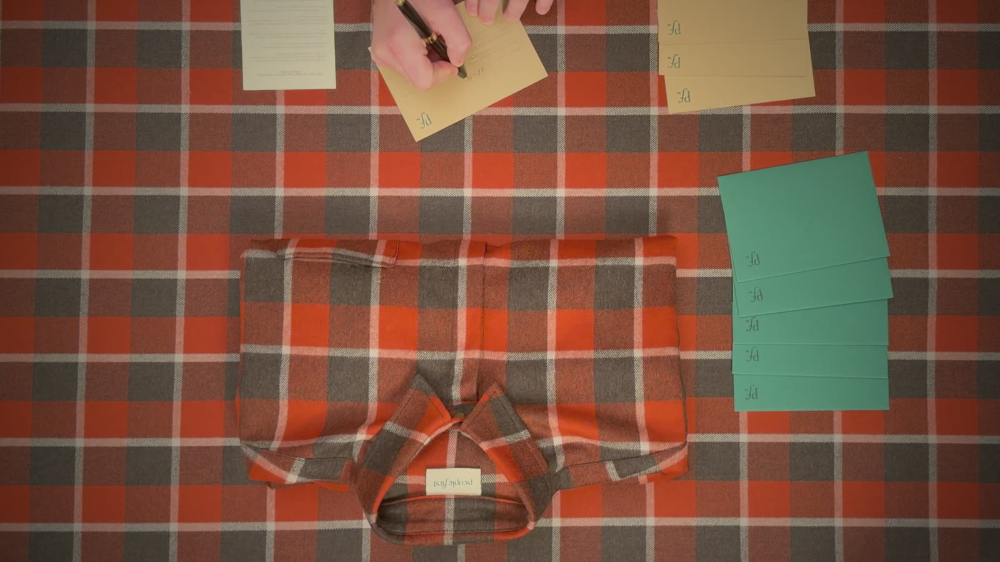
С 9 по 18 ноября выходит серия из 19 роликов о шерсти и Vi2 «Со съёмки» — прогрев «кто мы». 19 ноября роликов нет, только тизер в сторис. 20 ноября — премьера бренд-фильма и первая клетка в продаже, 21 ноября — фильм с Верой. Дальше до конца марта каждую неделю 3 зимних ролика и 3 летних.
- Прогрев
- 19роликов за 9–18 ноября, по два в день
- Тишина
- 19.11только сторис: тизер 15 с и «завтра»
- Премьера
- 20.11фильм VIDEO 1 и первая клетка, фильм в закреп
- Вторая волна
- 21.11фильм с Верой, потом ответы на вопросы и отзывы
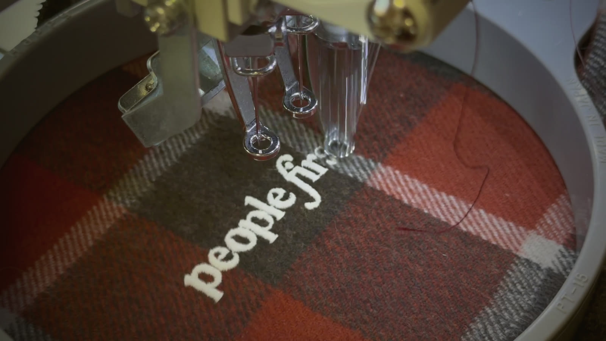
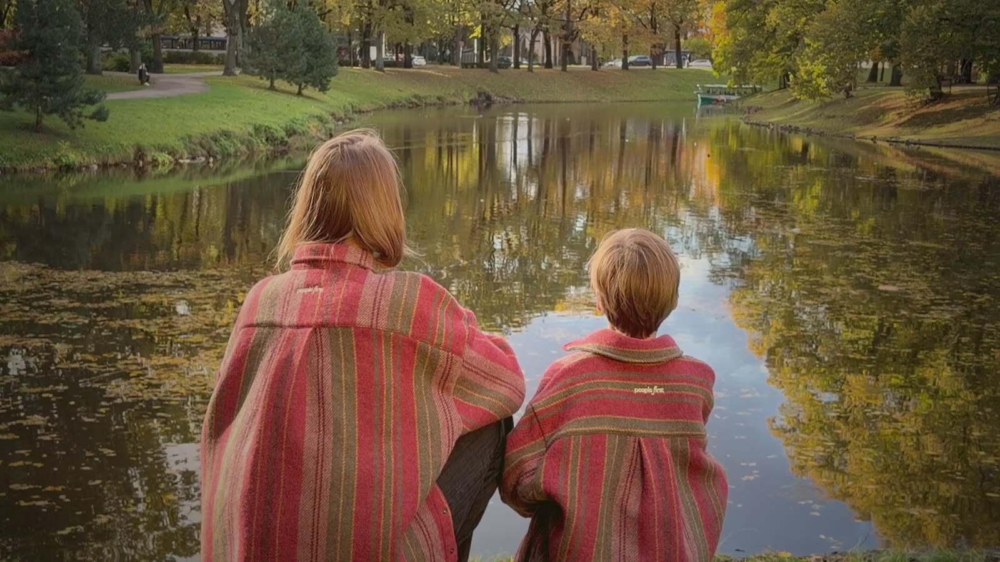
Как получить максимум узнаваемости
- Два контура каждый день. 12:30 — Trial Reel для новой аудитории, 19:30 — лента для подписчиков. Тот же файл в TikTok в то же время
- Серия узнаётся с первого кадра. Одинаковая обложка «wool · 01/19» одним шрифтом: в профиле серия читается как одна история
- Отсчёт. С 9 ноября в подписи и сторис «N дней до первой клетки», в сторис — стикер-напоминание о запуске: Instagram сам пришлёт уведомление
- Слово WOOL. «Напишите WOOL — 20 ноября пришлём ссылку первыми». Комментарии и Direct двигают охват, а число WOOL — это размер листа ожидания
- Соавторы. Ролики с людьми (W06, W07, W10, W17, W18) выпускаем с героями в соавторах — их увидят и подписчики героев
- Подпись для поиска. Первая строка — хук, вторая — italian wool shirt, wool check shirt, oversized wool shirt
- Первый час. Ответы на все комментарии, ролик в сторис и в канал рассылки
- Лучший Trial — в ленту. Через 48 часов Trial с лучшим досмотром и пересылками выходит в ленту в пятницу, 13 ноября
- День запуска. Фильм в 12:00, сразу в закреп и в сторис со ссылкой; всем, кто написал WOOL, — ссылка в Direct. Закреп профиля: фильм, W03, W10
Считаем: досмотр первых 3 с выше 60%, пересылки на 1000 показов, новые подписчики за неделю, число WOOL. Если ролик проседает по досмотру, меняем хук, а не историю.
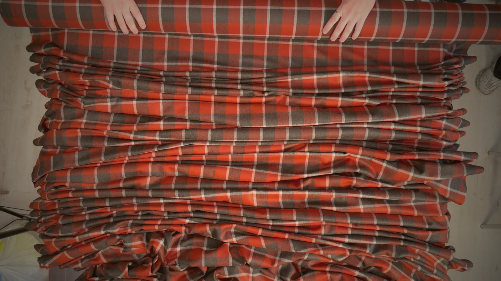
45 публикаций, 9 ноября — 19 декабря
9–18 ноября — прогрев о шерсти: Trial в 12:30, лента в 19:30. 20 ноября — премьера и первая клетка. С 23 ноября шерсть и лето идут парами: лето под хуком «the summer we kept». Серия W — папка REELS_AUTUMN.
| № | Дата | Рубрика | Ролик | Титр-хук | Статус | |
|---|---|---|---|---|---|---|
| 1 | Пн 9 ноя · 12:30 | Как носить | W10 Одна стена, разные рубашки | same wall. same girl. | Trial | Готов + хук |
| 2 | Пн 9 ноя · 19:30 | Шерсть | W01 Ткань | it starts with the cloth | Лента | Готов + хук |
| 3 | Вт 10 ноя · 12:30 | Шерсть | W11 На ощупь | touch it first | Trial | Готов + хук |
| 4 | Вт 10 ноя · 19:30 | Шерсть | W02 Раскрой | every shirt begins on this table | Лента | Готов + хук |
| 5 | Ср 11 ноя · 12:30 | Закулисье | Vi2 Со съёмки | so if he looks good, he must be a brute? | Trial | Готов |
| 6 | Ср 11 ноя · 19:30 | Шерсть | W12 Мел и лекало | a line of chalk | Лента | Готов + хук |
| 7 | Чт 12 ноя · 12:30 | Настроение · осень | W07 Осень в шерсти | the first cold morning | Trial | Готов + хук |
| 8 | Чт 12 ноя · 19:30 | Шерсть | W03 Открытка с номером | why does a shirt need a number? | Лента | Готов + хук |
| 9 | Пт 13 ноя · 12:30 | Семья | W06 Два размера | same cloth, two sizes | Trial | Готов + хук |
| 10 | Пт 13 ноя · 19:30 | Шерсть | W13 У каждой свой номер | every shirt has a number | Лента | Готов + хук |
| 11 | Сб 14 ноя · 11:00 | Настроение · осень | W08 Медленный день | a bench. a paper. a dog. | Trial | Готов + хук |
| 12 | Сб 14 ноя · 19:30 | Как носить | W17 Одеваемся | first, the shirt | Trial | Готов + хук |
| 13 | Вс 15 ноя · 11:00 | Настроение · дом | W16 Медленное воскресенье | a slow sunday | Trial | Готов + хук |
| 14 | Пн 16 ноя · 12:30 | Настроение · город | W09 Город и собака | out the door | Trial | Готов + хук |
| 15 | Пн 16 ноя · 19:30 | Шерсть | W05 Вышивка | a small signature | Лента | Готов + хук |
| 16 | Вт 17 ноя · 12:30 | Настроение · вечер | W15 Вечер дома | evening, indoors | Trial | Готов + хук |
| 17 | Вт 17 ноя · 19:30 | Шерсть | W14 Строчка | stitched in, slowly | Лента | Готов + хук |
| 18 | Ср 18 ноя · 12:30 | Настроение · осень | W19 Газета | today's paper: people first | Trial | Готов + хук |
| 19 | Ср 18 ноя · 19:30 | Шерсть | W04 Упаковка | folded by hand | Лента | Готов + хук |
| — | Чт 19 ноя | Тишина перед запуском | Сторис: тизер фильма 15 с, отсчёт, «напишите WOOL» | tomorrow. | Только сторис | Нарезать тизер из VIDEO 1 |
| 20 | Пт 20 ноя · 12:00 | Премьера и запуск | Бренд-фильм VIDEO 1 (34 с) + первая клетка в продаже | без титра, фильм как есть | Лента + закреп | Готов |
| 21 | Сб 21 ноя · 19:30 | Премьера, вторая волна | Фильм с Верой (PF_VERA4) | без титра | Лента | Нужна вертикальная версия |
| 22 | Пн 23 ноя | Настроение · лето | 01 Розовые полоски | the summer we kept | Trial | Готов + хук |
| 23 | Вт 24 ноя | Шерсть | 24 Deadstock — ткань, которой больше нет | fabric no one else will have | Лента | Монтаж из архива |
| 24 | Ср 25 ноя | Закулисье | 10 Домашнее видео | no crew. just a camera passed around. | Trial | Готов + хук |
| 25 | Чт 26 ноя | Как носить | 37 Лето под шерстью: полоски под клеткой | your summer shirt, under wool | Trial | Монтаж: REELS + AUTUMN25 |
| 26 | Пт 27 ноя | Продукт | 30 Костюмы и куртки (74mt, 45mt) | grey wool, one thin red line | Лента | Нужна съёмка |
| 27 | Сб 28 ноя | Настроение · лето | 02 Качели у озера | bare feet, linen, one swing | Trial | Готов + хук |
| 28 | Пн 30 ноя | Настроение · лето | 07 Лиловый газон | lilac stripes, lake wind | Trial | Готов + хук |
| 29 | Вт 1 дек | Шерсть | 27 Основатели: зачем мы ездим в Италию | why we fly to italy for wool | Лента | Нужна запись голоса |
| 30 | Ср 2 дек | Закулисье | 38 Бэкстейдж студии (AUTUMN25) | one shirt, one white room | Trial | Монтаж из AUTUMN25 |
| 31 | Чт 3 дек | Как носить | 31 Одна рубашка на троих | same shirt, three people | Trial | Монтаж из архива |
| 32 | Пт 4 дек | Продукт | 29 Подарок с номером (Signature) | a gift with a number | Лента | Нужна съёмка Signature (открытка есть в AUTUMN25) |
| 33 | Сб 5 дек | Настроение · лето | 08 Кресло и шампанское | champagne, a scarf, a chair | Trial | Готов + хук |
| 34 | Пн 7 дек | Семья | W18 Мама и сын у воды | matching, for the holidays | Trial | Готов + хук |
| 35 | Вт 8 дек | Шерсть | 32 Почему мы делаем так мало | why we make so few | Лента | Монтаж из архива |
| 36 | Ср 9 дек | Закулисье | 33 Примерки и собаки | the real stars of the shoot | Trial | Монтаж: REELS + AUTUMN25 |
| 37 | Чт 10 дек | Как носить | 40 Одна шерстяная рубашка — 3 образа (AUTUMN25) | one wool shirt, 3 ways | Trial | Монтаж из AUTUMN25 |
| 38 | Пт 11 дек | Продукт | 34 Зипы и спортивные костюмы | the zip-up, done slowly | Лента | Нужна съёмка |
| 39 | Сб 12 дек | Настроение · лето | 16 Длинная гостиная | brown, sand and stone | Trial | Готов + хук |
| 40 | Пн 14 дек | Настроение · лето | 18 Кабинет, диван, собака | nothing planned until evening | Trial | Готов + хук |
| 41 | Вт 15 дек | Шерсть | 41 Открытка к подарку | a card, written for them | Лента | Перемонтаж W03 под подарки |
| 42 | Ср 16 дек | Закулисье | 26 Зарядить плёнку | loading the film | Trial | Монтаж из архива |
| 43 | Чт 17 дек | Шерсть + лето | 42 Чемодан у пруда (AUTUMN25) | packing wool for somewhere warm | Trial | Монтаж из AUTUMN25 |
| 44 | Пт 18 дек | Продукт | 36 Пуховики | warm, for once | Лента | Нужна съёмка |
| 45 | Сб 19 дек | Настроение · лето | 20 Последний день лета | the last day of summer | Trial | Готов + хук |
105 из архива, 45 с новой съёмки
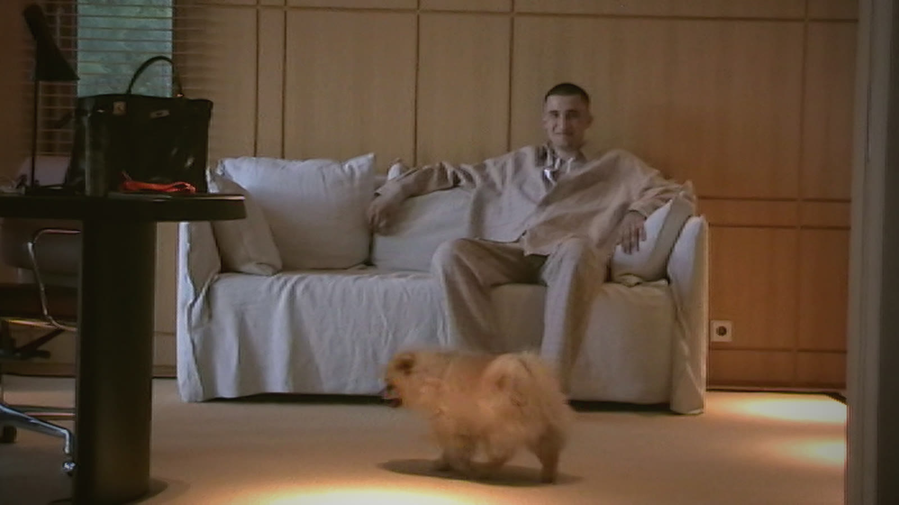
| Источник | Роликов | Что делаем |
|---|---|---|
| Уже смонтировано (REELS, REELS_Vi2) | 21 | Добавляем титр-хук и выпускаем |
| Неиспользованные клипы архива (около 90) | 30 | Оранжерея, гостиная, бассейн с цветами, мужские образы |
| Те же сцены в другом формате | 40 | «Как носить», «Ткань», серии по одной вещи, вторые версии хука |
| Другие папки бренда: кампании, лукбук 2025, VIDEO SOFIJA | 14 | Нужно посмотреть, что там есть и можно ли брать |
| Новая съёмка, 3–4 полудня | 45 | Костюмы и куртки, зипы, пуховики, Signature и карточка, ателье, основатели |
| Итого | 150 |
Что снять — тем же камкордером
- Крупно ткани 74mt и 45mt, пуговицы, швы, бирки — по 10–15 с на каждую деталь
- Signature-рубашка и карточка подлинности с номером: руки достают из коробки, крупно номер
- Каждый новый товар на 2–3 людях разного возраста и фигуры: проходка, крупно лицо, деталь
- Ателье или стол закройщика: руки, ножницы, рулон ткани
- Основатели: 6–8 коротких ответов на вопросы на камеру или только голосом
- Звук съёмок живьём: реплики режиссёра и моделей — основа рубрики «Закулисье»
Монтаж партиями по 10 роликов за 2 недели до выхода; в запасе всегда готовые ролики на 2 недели вперёд.
Каждое воскресенье — цифры, каждые 4 недели — разбор
Цифры ролика смотрим через 7 дней после выхода, отдельно для Instagram и TikTok: охват, досмотр до 3-й секунды, средний процент просмотра, пересылки, сохранения, подписки, визиты профиля, Direct. Плюс признаки ролика: рубрика, тип хука, длина, время, лицо в первом кадре.
| Если | То |
|---|---|
| До 3-й секунды досматривают меньше 50% | Меняем первый кадр и титр-хук, выпускаем повторно в Trial Reels |
| Хук держит, но средний просмотр меньше 40% | Ролик короче на 2–3 с, герой-кадр раньше |
| Пересылок или сохранений вдвое больше медианы | Ещё 2–3 ролика в том же формате, этот — в ленту |
| Рубрика 4 недели подряд в нижней трети | Забираем у неё 1 слот в неделю в пользу лидера |
| Ролик в TikTok сильнее, чем в Instagram (или наоборот) | Фиксируем формат за платформой, дальше они могут расходиться |
| Пришло сообщение от бутика или клиента | Записываем, с какого ролика; такие ролики — главный кандидат в ленту |
Выгрузки статистики можно присылать мне — я посчитаю и предложу правки на следующие 4 недели.
- Сколько сейчас подписчиков в Instagram и есть ли доступ к Trial Reels?
- Есть ли аккаунт в TikTok и какое имя берём?
- Где главная аудитория и в каком часовом поясе: Балтия, Украина, Средиземноморье?
- Нужна ли русская или украинская версия подписей рядом с английской?
- Куда ведёт ссылка в профиле: сайт pplfrst.studio, магазин, Direct?
- Кто публикует ролики и отвечает на комментарии в первый час?
- Когда снимаем осенние и зимние вещи, Signature и карточку — первый такой ролик в плане 27 ноября
- Какие факты о тканях можно называть: фабрика, год, состав, тираж расцветки?
- Есть ли права на голос диктора из VIDEO 1 и на лица всех моделей в публикациях?
Внутренние: годовой план People First 2026–2027, контент-план сентябрь–декабрь 2026, пресс-релиз. Внешние — в основном блоги маркетинговых сервисов; официальный источник только по Trial Reels. Поиск — 3 ноября 2026.
- Instagram Creators — Trial reels
- Dataslayer — Instagram Algorithm 2026
- Blckalpaca — Watch time and sends per reach
- Postey — TikTok Algorithm 2026, what's confirmed
- SocialPilot — TikTok Algorithm 2026
- SocialPilot — How often to post on Instagram
- Kontentino — How often to post on Instagram
- Social Media Today — Reach of reposts with TikTok watermark
- CapCut — TikTok caption keywords and search
People
First